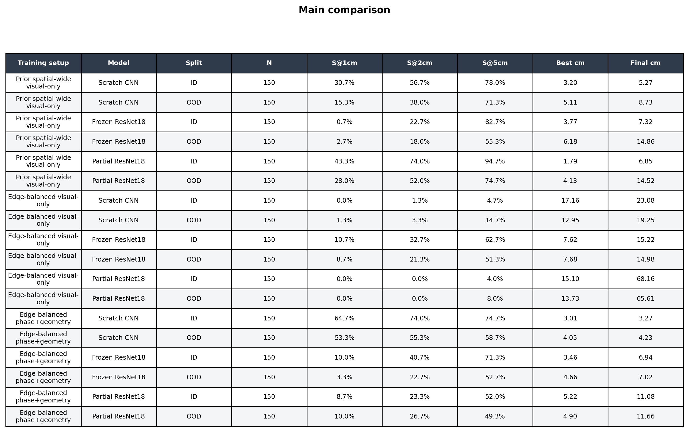
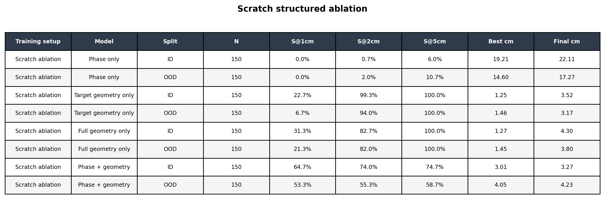
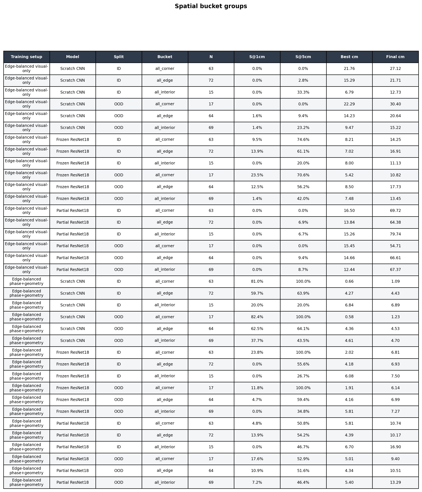

Structured Diagnostic
Phase+geometry-conditioned visual BC results, ablations, spatial bucket analysis, and rollout videos.
Main diagnostic result. Edge-balanced visual-only training did not solve obstacle-aware spatial OOD. Adding explicit phase and geometry to the visual policy increased Scratch CNN OOD S@1cm from 1.3% to 53.3% and reduced final distance from 19.25 cm to 4.23 cm.
Main Edge-Balanced Comparison
| Setup | Model | Split | Rollouts | S@1cm | S@2cm | S@5cm | Best cm | Final cm |
|---|---|---|---|---|---|---|---|---|
| Edge-balanced phase+geometry | Frozen ResNet18 | ID | 150 | 10.0% | 40.7% | 71.3% | 3.5 | 6.9 |
| Edge-balanced phase+geometry | Frozen ResNet18 | OOD | 150 | 3.3% | 22.7% | 52.7% | 4.7 | 7.0 |
| Edge-balanced phase+geometry | Partial ResNet18 | ID | 150 | 8.7% | 23.3% | 52.0% | 5.2 | 11.1 |
| Edge-balanced phase+geometry | Partial ResNet18 | OOD | 150 | 10.0% | 26.7% | 49.3% | 4.9 | 11.7 |
| Edge-balanced phase+geometry | Scratch CNN | ID | 150 | 64.7% | 74.0% | 74.7% | 3.0 | 3.3 |
| Edge-balanced phase+geometry | Scratch CNN | OOD | 150 | 53.3% | 55.3% | 58.7% | 4.0 | 4.2 |
| Edge-balanced visual-only | Frozen ResNet18 | ID | 150 | 10.7% | 32.7% | 62.7% | 7.6 | 15.2 |
| Edge-balanced visual-only | Frozen ResNet18 | OOD | 150 | 8.7% | 21.3% | 51.3% | 7.7 | 15.0 |
| Edge-balanced visual-only | Partial ResNet18 | ID | 150 | 0.0% | 0.0% | 4.0% | 15.1 | 68.2 |
| Edge-balanced visual-only | Partial ResNet18 | OOD | 150 | 0.0% | 0.0% | 8.0% | 13.7 | 65.6 |
| Edge-balanced visual-only | Scratch CNN | ID | 150 | 0.0% | 1.3% | 4.7% | 17.2 | 23.1 |
| Edge-balanced visual-only | Scratch CNN | OOD | 150 | 1.3% | 3.3% | 14.7% | 13.0 | 19.3 |

Scratch Structured Ablations
Phase alone fails because it does not locate the target or obstacle. Geometry alone gives strong loose success and final stability. Phase+geometry gives the best 1cm precision, but with a more bimodal failure pattern.
| Variant | Split | Rollouts | S@1cm | S@2cm | S@5cm | Best cm | Final cm |
|---|---|---|---|---|---|---|---|
| Full geometry only | ID | 150 | 31.3% | 82.7% | 100.0% | 1.3 | 4.3 |
| Full geometry only | OOD | 150 | 21.3% | 82.0% | 100.0% | 1.4 | 3.8 |
| Phase + geometry | ID | 150 | 64.7% | 74.0% | 74.7% | 3.0 | 3.3 |
| Phase + geometry | OOD | 150 | 53.3% | 55.3% | 58.7% | 4.0 | 4.2 |
| Phase only | ID | 150 | 0.0% | 0.7% | 6.0% | 19.2 | 22.1 |
| Phase only | OOD | 150 | 0.0% | 2.0% | 10.7% | 14.6 | 17.3 |
| Target geometry only | ID | 150 | 22.7% | 99.3% | 100.0% | 1.2 | 3.5 |
| Target geometry only | OOD | 150 | 6.7% | 94.0% | 100.0% | 1.5 | 3.2 |

Spatial Bucket Breakdown
The bucket analysis shows the diagnostic value of structured conditioning most clearly. Visual-only scratch fails badly on OOD corners and edges. Structured scratch solves OOD corners and improves edges, but edge/interior cases still contain failures.
| Setup | Bucket | Rollouts | S@1cm | S@5cm | Best cm | Final cm |
|---|---|---|---|---|---|---|
| Edge-balanced phase+geometry | corner | 34 | 82.4% | 100.0% | 0.6 | 1.2 |
| Edge-balanced phase+geometry | edge | 128 | 62.5% | 64.1% | 4.4 | 4.5 |
| Edge-balanced phase+geometry | interior | 138 | 37.7% | 43.5% | 4.6 | 4.7 |
| Edge-balanced visual-only | corner | 34 | 0.0% | 0.0% | 22.3 | 30.4 |
| Edge-balanced visual-only | edge | 128 | 1.6% | 9.4% | 14.2 | 20.6 |
| Edge-balanced visual-only | interior | 138 | 1.4% | 23.2% | 9.5 | 15.2 |

Representative Videos
Visual-only Scratch CNN OOD failure.
Phase+geometry Scratch CNN OOD success.
Phase+geometry Scratch CNN OOD failure case.
Frozen structured comparison rollout.
What This Proves
This does not prove that privileged state should be used at deployment. It proves that the visual-only obstacle-aware policies were missing control-relevant phase and geometry information. That is exactly the diagnostic story: visual diversity alone was insufficient because the task required reliable inference of where the robot is in the route and how the obstacle geometry relates to the target.